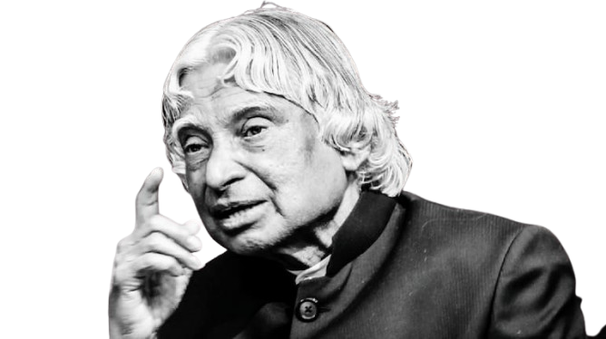

(1931-2015)
" Missile Man Of India "
&
The People's President...
DREAMS
is not what you
SEE IN SLEEP
is the thing which
DOESN'T LET YOU SLEEP...

*** BIOGRAPHY ***
The Missile Man of India, Dr. APJ Abdul Kalam who gave India its first Satellite Launch Vehicle, SLV-III, which was used to deploy the Rohini satellite was born on October 15, 1931.
He died on July 27, 2015.
Kalam was elected as the 11th president of India from 2002-07 and has been called 'The People's President ' many times in the media and by the masses.
- He was born on 15 October 1931 to a Tamil Muslim family. His father Jainulabudeen was a boat owner and imam and his mother Ashiamma was a housewife.
- Kalam was the youngest of four brothers and one sister in his family. He sold newspapers to provide his family with some money.
- Avul Pakir Jainulabdeen Abdul Kalam served as the 11th president of India from 2002-07.
- Kalam started working at a very young age since he came from a very poor background.
- It is even said, that, to support his family, Kalam used to distribute newspapers after school.
- Abdul Kalam graduated with a degree in Physics in the year 1854.
- At Defense Research and Development Organisation (DRDO), Kalam designed a small helicopter for the Indian army.
- Kalam was transferred to ISRO in 1969 as the project director of India's first satellite launch vehicle (SLV-III) to deploy the Rohini satellite in the earth's orbit.
- Kalam is popularly known as the 'Missile Man of India' for his work on missile and launch vehicle technology.
- His books include Wings of Fire (his autobiography), India 2020- A Vision for the New Millenium, Ignited Minds, My Journey, The Luminous Sparks, Children ask Klama etc.
- In 2009, Kalam became the first Asian to be honoured with the Hoover Medal which is America's top engineering prize. He has also received honorrary doctorates from more than 30 universities.
- The satellite vehicle deployed the Rohini satellite successfully in near-Earth orbit in July 1980.
- Kalam received the Government's LV and Slv projects between the 1970s-90s.
- Kalam also got honoured by the Government of India with the Padma Bhushan in 1981 and the Padma Vibhushan in 1990.
- He has been honoured with the Bharat Ratna as well in 1997.
- APJ Abdul Kalam’s Quotes focus on those people who struggle in life for success and to achieve the ultimate goal. Here's the famous quote of A.P.J.Abdul Kalam that I like :-
" It is very easy to defeat someone, but it is very hard to win someone."